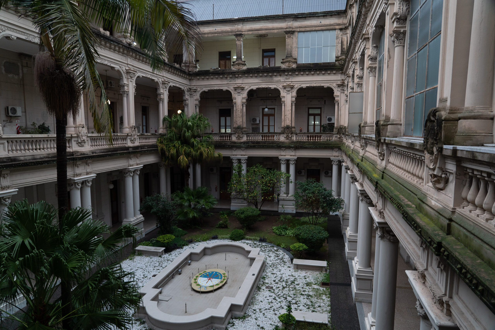
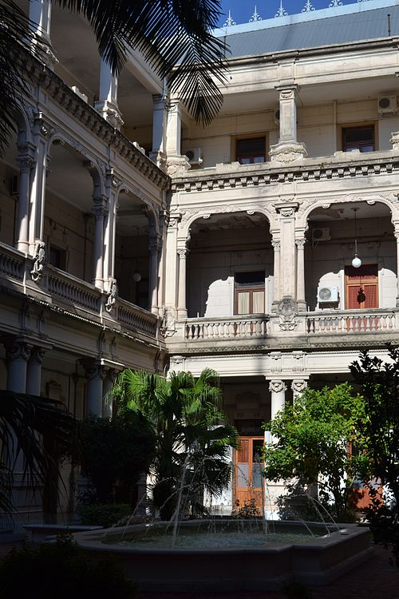

Casa de Gobierno

La Casa de Gobierno de Santa Fe es la sede del poder ejecutivo provincial. El edificio está ubicado en la calle 3 de febrero de 2649, frente a la Plaza 25 de Mayo.
Galería


Cómo llegar
Líneas de colectivo
Líneas 2, 3, 8, 9, 10, 11, 13, 14, 15, 16, C verde, C negra.
Desde Santo Tomé
Línea C verde, C negra
Desde Sauce Viejo
Línea C verde
Horarios de apertura
Lunes a Viernes - 08:00hs a 18:30hs
Sábados - 08:00hs a 13:00hs
Domingos y feriados - Cerrado